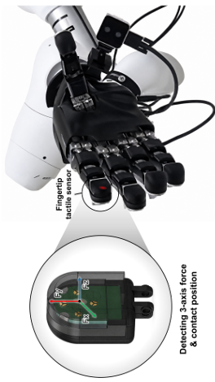
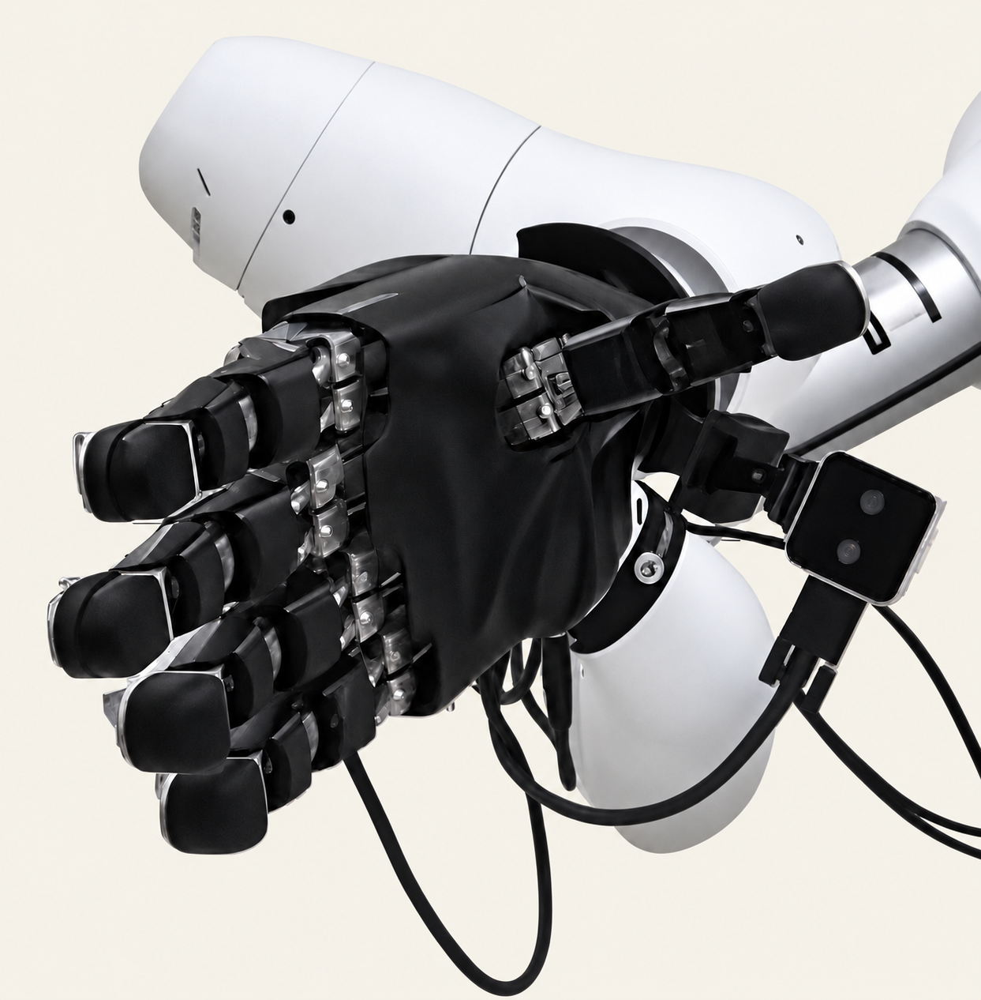

FINGERTIP TACTILE SENSOR
로봇손용 3축
손끝 촉각 센서
세 개의 부채꼴 전극을 하나의 그룹으로 구성해 수직력과 전단력을 구분합니다. 손끝 크기에 맞춘 하드웨어를 제작하고, 힘·위치 추정과 로봇 파지 실험으로 평가했습니다.
센서 제작 · 캘리브레이션 · 로봇손 실험연구 자세히 보기
01 / RESEARCH ARCHIVE만지는 힘과 위치를 측정하고,
그 정보를 로봇의 동작으로 연결합니다.
센서 구조부터 회로, 캘리브레이션과 로봇 실험까지.

AIDIN-HAND / FINGERTIP TACTILE SENSOR직접 제작한 하드웨어와 실제 실험을 중심으로 연구를 소개합니다. 각 프로젝트에서 설계와 검증이 어디까지 진행되었는지 함께 정리했습니다.
세 개의 부채꼴 전극을 하나의 그룹으로 구성해 수직력과 전단력을 구분합니다. 손끝 크기에 맞춘 하드웨어를 제작하고, 힘·위치 추정과 로봇 파지 실험으로 평가했습니다.
센서 제작 · 캘리브레이션 · 로봇손 실험연구 자세히 보기
01 / RESEARCH ARCHIVE23개 그룹과 69개 섹터로 넓은 접촉면을 측정합니다. 다채널 취득 회로와 성형 공정을 구성하고, 3축 하중 및 그리퍼 장착 시험을 진행했습니다.
하드웨어 제작 · 3축 하중 시험 · 그리퍼 장착연구 자세히 보기 02 / RESEARCH ARCHIVE
02 / RESEARCH ARCHIVE장갑 구동부의 엔코더와 장력 정보로 물체 크기를 추정하는 연구입니다. 와이어 장력·파지력 측정 장치 제작과 구동기 제어를 담당했습니다.
계측 하드웨어 · 구동 제어 · 실물 실험연구 자세히 보기 03 / RESEARCH ARCHIVE
03 / RESEARCH ARCHIVE전극 가장자리의 프린징 전기장과 겹침 변화로 방향 정보를 얻는 설계입니다. 전극 형상을 시뮬레이션하고 손바닥 센서의 PCB·접촉 구조로 연결했습니다.
정전용량 시뮬레이션 · 전극 및 하드웨어 설계연구 자세히 보기 04 / SIMULATION & CAD
04 / SIMULATION & CAD접촉면의 변형, 전기적 신호, 추정 알고리즘과 로봇 동작을 하나의 실험 흐름으로 연결합니다.
접촉 하중이 센서에 전달되는 구조와 전극 배치를 검토하고 시뮬레이션으로 비교합니다.
실리콘 성형, PCB 제작과 조립을 거쳐 측정·처리·통신 회로를 통합합니다.
기준 센서와 비교하고 훈련과 평가 데이터를 나눠 힘·위치 추정 성능을 확인합니다.
센서를 손가락과 그리퍼에 장착하고 실제 접촉과 파지 과정에서 출력을 확인합니다.
성균관대학교 지능형로봇학과 · 석사과정
Department of Intelligent Robotics
Sungkyunkwan University
촉각 센서와 로봇 응용을 연구합니다. 센서의 구조와 전장을 설계하고, 신호를 취득·분석해 접촉 힘과 위치를 추정하는 방법을 다룹니다.
손끝 센서를 로봇손에 적용하는 연구에서 시작해 더 넓은 그리퍼 접촉면과 손바닥 전극 설계로 범위를 넓히고 있습니다. 웨어러블 로봇 연구에서는 장력·파지력 측정 장치와 구동 제어를 담당했습니다.
Capacitive Tactile Sensors for Three-Axis Force and Contact-Position Estimation in Robotic Applications